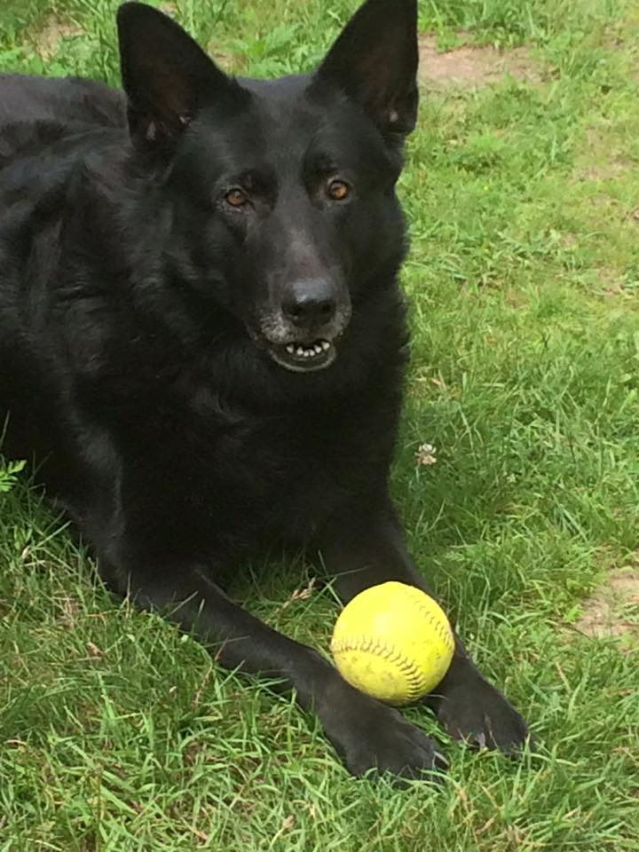
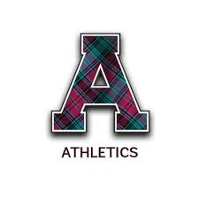
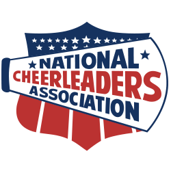
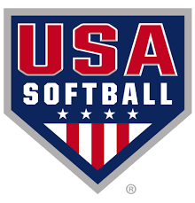
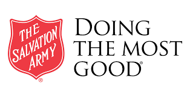

What makes me, ME!
Maggie was a rescue dog that lived with us for most of my childhood. Playing ball in the yard was always an adventure with her around as it was a race to the ball everytime. She's gone now, but my softball skills are a tribute to her and the race to every ball!.
 I came to Alma to Cheer. Having three state title in high school, I knew that I wanted to be part of a college cheer team and Alma was top of my list. I was recruited by several colleges, but Alma had the national recognition as the best small college in the cheer nation, so the decision was easy. I now compete on the NCA team as weell as the STUNT team. We have one NCA National Championship, one runner up and two runner up places in STUNT.
While Cheer is my first love, softball is a very close second. I started playing as soon as I could walk. My dog Maggie, made me quick and my parents helped develop my skills. I always said I would play for team USA but soon realized I loved cheer more. I played four years of varisty in high school and traveled the midwest playing during the summers. I have made life long friends playing ball and someday will return to either play or coach.
I was raised at The Salvation Army in Midland. My parents both worked there at one point and my Dad still does. The work they do has shown me how far compassion can take a person when they are at the lowest point in their life. The Salvation Army really does what they say: Doing the Most Good.